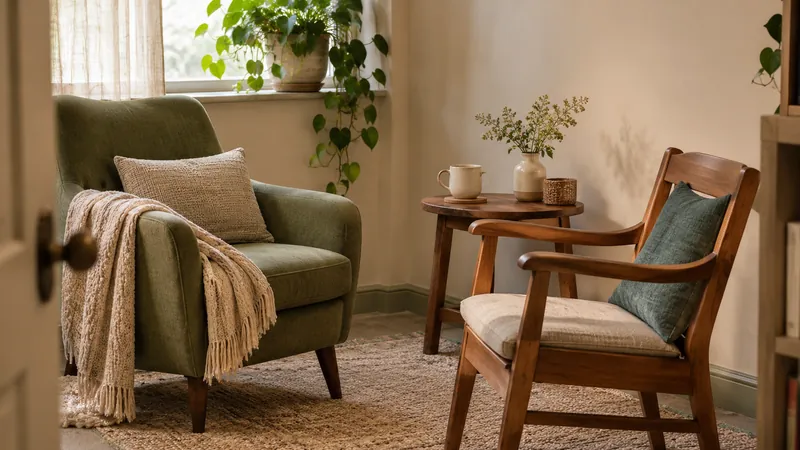

WORKING TOGETHER
A place to explore, together.
Maybe the approaches that seem to work for everyone else don't work for you. Maybe your circumstances have changed, or you're questioning expectations you've carried for a long time.
Coaching is a partnership where we make space to explore what's true for you, what matters to you, and what might help you move forward in a way that fits your life.
You don't need a diagnosis or a perfectly defined goal.
You might be navigating ADHD, autism, disability, or changes in your own life or the life of someone you love. You might simply be feeling overwhelmed, uncertain, or curious about another way forward.
You don't need to know exactly why something feels difficult to begin exploring what could help.
What coaching can look like
Sometimes the hardest part isn't knowing what you're supposed to do. It's figuring out whether that's something you actually want or need.
Our conversations might explore:
Managing everyday demands, responsibilities, and relationships.
Navigating change or a new understanding of yourself or someone you love.
Questioning expectations that don't reflect your needs or values. (And discovering those needs and values!)
Experimenting with practical systems and approaches that fit how you live.
There's no one formula to follow. You can explore possibilities, try things, notice what works, and change directions as you go.
What to expect
We work together through individual conversations, usually by phone. Video calls or local in-person meetings may also be possible by arrangement.
We begin by talking about what's going on and what you'd like to explore. From there, we make room for reflection, new perspectives, and practical experiments that fit your circumstances.
It's not about getting everything right. It's about learning what works for you.
Cost
I'm currently offering reduced-rate coaching while completing my training. Current rates are $75/hour.
Coaching and therapy
I'm a coach, not a therapist. I don't diagnose or treat medical or mental health conditions, and coaching isn't a replacement for therapy or medical care.

If you're looking for treatment or medical advice, I encourage you to work with a qualified professional.
Coaching can complement that care by focusing on everyday life: how you organize your time, navigate relationships, make choices, or build routines and support systems that work with your needs.
You don't need a diagnosis to work with me, and you don't need to justify why things are hard before we can explore what might help.